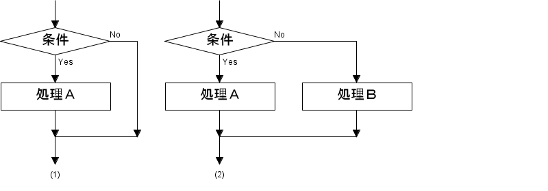
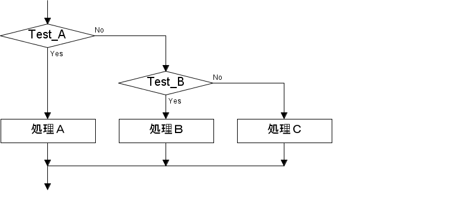
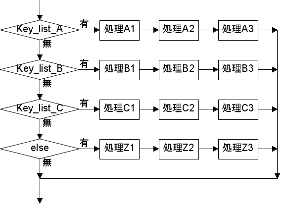
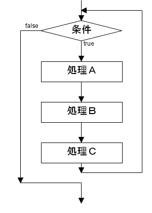

前回は Ruby の基本的なデータ型について簡単に説明しました。今回は Ruby の制御構造について説明します。Ruby の基本的な制御構造は他のスクリプト言語のそれとだいたい同じです。最初に if 文から説明します。
if 文は「条件分岐」を行います。簡単にいうと「もしも～～ならば○○をせよ」という動作です。図 1 を見てください。

図 1 : if 文の動作
図 1 (1) では、「もしも条件を満たすならば、処理 A を実行する」となります。この場合、条件が成立しない場合は何も処理を実行しませんが、図 1 (2) のように、条件が成立しない場合でも処理を実行させることができます。(2) の場合では、「もしも条件を満たすならば処理 A を実行し、そうでなければ処理 B を実行する」となります。すなわち、条件によって処理 A か処理 B のどちらかが実行されることになります。
一般に、プログラミング言語では条件が成立することを「真 (true)」といい、条件が不成立のことを「偽 (false)」といいます。プログラムでは真偽を表すデータ型が必要になります。Ruby の場合、真を表すデータとして true があり、偽を表すデータとして false または nil があります。実際には、nil, false 以外のデータが真と判断されます。true は真を表すデータの代表として用いられます。
他のスクリプト言語、たとえば Perl や Python の場合、数値 0 や空文字列 "" も偽と判断されますが、Ruby ではこれらのデータは真と判断されます。他のスクリプト言語と大きく異なるところなので注意してください。
図 2 に if 文の構文を示します。
#
# if test then then節 else else節 end
#
if test then # then は省略可
処理A
処理B
処理C
else
処理D
処理E
処理F
end
図 2 : if の構文 (1)
Ruby は Perl と同様に # から改行までが注釈文（コメント）になります。if のあとに条件部 test を書き、その後ろに then を書きます。この then は省略してもかまいませんが、if 文を 1 行で書く場合は then が必要になります。
次に、条件部が真のときに実行する処理を書きます。処理は一つだけではなく、複数の処理を記述することができます。これらの処理は順番に実行されます。なお、条件部が真のときに実行される処理を then 節、偽のときに実行される処理を else 節と呼びます。
test の結果が真であれば、then 節に記述されている処理 A から C までを順番に実行します。test の結果が偽であれば、else 節に記述されている処理 D から F までを順番に実行します。if 文の最後には必ず end を書きます。なお、else 節は省略することができます。
if 文は図 3 と図 4 のように入れ子（ネスト）にすることができます。
#
# if 文の入れ子
#
if test_a
処理A
else
if test_b
処理B
else
処理C
end
end
図 3 : if 文の入れ子

図 4 : if 文の入れ子の動作
test_a が偽の場合は else 節を実行します。else 節は if 文なので、条件 test_b を実行します。この結果が真であれば処理 B を実行します。そうでなければ、else 節の処理 C を実行します。この処理は図 5 のように書き換えることができます。
# # if - elsif - else - end # if test_a 処理A elsif test_b 処理B else 処理C end 図 5 : if 文の構文 (2)
Ruby は Perl と同様に elsif を使って if 文を連結することができます。test_a が偽の場合は、次の elsif の条件 test_b を実行します。この結果が真であれば処理 B を実行します。そうでなければ、else 節の処理 C を実行します。なお、elsif はいくつでもつなげることができます。
if 文のかわりに unless 文を用いると、条件部が偽のときに処理を実行することができます。ただし、unless 文は elsif のように複数の条件部を連結することはできません。
if 文と unless 文は次の形式で記述することができます。
式１ if 式２ 式１ unless 式２
これを「修飾子形式」といいます。Perl にも同様の形式があるので、ご存知の方も多いことと思います。if 文の場合、式 2 が真であれば式 1 が実行されます。unless 文の場合、式 2 が偽であれば式 1 が実行されます。
Ruby には表 1 に示す比較演算子が用意されています。
| 演算子 | 意味 |
|---|---|
| == | 等しい |
| != | 等しくない |
| < | より小さい |
| > | より大きい |
| <= | より小さいか等しい |
| >= | より大きいか等しい |
| <=> | 小さければ -1
等しければ 0 大きければ +1 |
Ｃ/Ｃ++や Perl の比較演算子とほぼ同じです。これらの比較演算子は数値だけではなく文字列にも適用することができます。最後の演算子 <=> は Perl と同じで、比較結果を -1, 0, +1 で返します。このような結果を返した方が便利な場合もあります。
簡単な例を示しましょう。
irb> 1 < 2 => true irb> 1 <= 1 => true irb> "abc" > "def" => false irb> "abc" <=> "def" => -1 irb> "def" <=> "abc" => 1
Ruby には表 2 に示す論理演算子があります。
| 演算子 | 意味 |
|---|---|
| !x | 否定 (真偽の反転) |
| x && y | 論理積 (x が真ならば y の値を返す) |
| x || y | 論理和 (x が偽ならば y の値を返す) |
| not x | 否定 (真偽の反転) |
| x and y | 論理積 (x が真ならば y の値を返す) |
| x or y | 論理和 (x が偽ならば y の値を返す) |
演算子の優先順位は not, and, or よりも !, &&, || の方が高いことに注意してください。
簡単な使用例を示しましょう。
irb> not true => false irb> not false => true irb> true and 1 => 1 irb> false and 2 => false irb> false or 3 => 3 irb> 4 or false => 4
&& と and は、左項が偽ならば右項を評価せずに偽を返します。|| と or は、左項が真ならば右項を評価せずに左項の値を返します。このため、&&, ||, and, or は「短絡演算子」と呼ばれることもあります。
一つの値を比較して条件分岐を行う場合は、if 文よりも case 文を使ったほうが簡単です。図 6 に case 文の構文を示します。
case key
when a1, a2, ... # キーリストA
処理A1
処理A2
処理A3
when b1. b2. ... # キーリストB
処理B1
処理B2
処理B3
when c1, c2, ... # キーリストC
処理C1
処理C2
処理C3
else
処理Z1
処理Z2
処理Z3
end
図 6 : case 文の構文
case 文は最初にキーとなる式 key を評価します。そのあと複数の when 節が続きます。when の後ろには値を指定します。複数の値を指定する場合はカンマで区切ってください。本稿では、これをキーリストと呼ぶことにします。キーリストは配列や範囲演算子で指定することもできます。範囲演算子はあとで説明します。そして、key の評価結果とキーリストの要素を比較します。
キーと等しい要素がある場合、その when 節の処理を順番に実行します。キーと等しい要素が見つからない場合は、次の when 節をチェックします。たとえば、キーリスト A で見つからない場合、次の節に移りキーリスト B をチェックします。一度 when 節が選択されたら、それ以降の when 節は実行されません。もしも、どのキーリストにも等しい要素がない場合は else 節が実行されます。なお、else 節は省略することができます。case 文の動作を図 7 に示します。

図 7 : case 文の動作
case 文はキーとキーリストの要素を === という演算子を使って比較します。演算子 === の標準動作は演算子 == と同じです。Ruby ではオブジェクト指向機能を使って演算子の動作を変更することができるので、case 文の動作をカスタマイズできるように専用の演算子 === が用意されています。
繰り返し (ループ) は同じ処理を何度も実行することです。まずは簡単な繰り返しから説明しましょう。while 文は条件が真のあいだ、指定された処理を繰り返し実行します。
# # while test 処理 end # while test 処理A 処理B 処理C ・・・ end 図 8 : while 文の構文

図 9 : while 文の動作
図 8 と図 9 を見ればおわかりのように、while 文はいたって単純です。簡単な例を示しましょう。hello, world を 10 回表示するプログラムをリスト 1 に示します。
リスト 1 : hello. wolrd の表示 n = 0 while n < 10 print "hello, world\n" n += 1 end
変数 n を 0 に初期化し、n の値が 10 よりも小さいあいだ処理を繰り返します。Ｃ/Ｃ++や Perl と同様に、n += i は n = n + i と同じ意味です。このほかに、-=, *=, /= も使うことができます。n の値は処理を繰り返すたびに +1 されていくので、n が 10 になった時点で繰り返しを終了します。
Ruby には while 文とは逆に、条件部が偽のあいだ処理を繰り返す until 文が用意されています。また、while 文と until 文は修飾子形式で記述することもできます。
式１ while 式２ 式１ until 式２
while の場合、式 2 が真である限り式１を繰り返します。until の場合、式 2 が偽である限り式 1 を繰り返します。なお、例外として式 1 が begin ... end であるとき、最初に begin ... end のなかで定義された処理を 1 回実行してから式 2 の条件判断を行います。簡単な例を示しましょう。
リスト 2 : hello, world の表示 (2) n = 0 begin print "hello, world\n" n += 1 end while n < 10
これでも hello, world を 10 回表示することができます。
Ruby にはもうひとつ繰り返しを行う for 文があります。一般に、複数の要素を格納するデータ型を「コンテナ (container)」とか「コレクション (collection)」と呼びます。Ruby の場合、配列やハッシュがコレクションになります。for 文はコレクションから順番に要素 (ハッシュの場合はキーと値を組にした配列) を取り出して変数に代入し、指定された処理を繰り返します。
Ruby の for 文は Perl の foreach と同じです。Ｃ/Ｃ++の for 文とは違うことに注意してください。for 文の構文を図 10 に、動作を図 11 に示します。
for 変数名 in collection 処理A 処理B ... end 図 10 : for 文 の構文
図 11 : for 文の動作
for 文の構文は for と in の間に取り出した要素を格納する変数を指定し、in の後ろにコレクションを指定します。
簡単な例を示しましょう。
irb> a = [1, 2, 3]
=> [1, 2, 3]
irb> for x in a
irb> print x, "\n"
irb> end
1
2
3
=> [1, 2, 3]
irb> d = {foo: 10, bar: 20, baz: 30}
=> {:foo=>10, :bar=>20, :baz=>30}
irb> for x in d
irb> print x, "\n"
irb> end
[:foo, 10]
[:bar, 20]
[:baz, 30]
=> {:foo=>10, :bar=>20, :baz=>30}
配列の場合、for 文は先頭から順番に要素を取り出します。ハッシュの場合、キーと値を配列に格納して変数にセットします。このとき、キーを取り出す順番はハッシュに追加した順番で行われます。print() は複数の引数を受け取ると、それらを続けて出力します。
また、for 文で使用する変数は、複数個指定することができます。簡単な例を示します。
irb> for k, v in d
irb> print k, v, "\n"
irb> end
foo10
bar20
baz30
=> {:foo=>10, :bar=>20, :baz=>30}
irb> for a, b in [[1, 2], [3, 4], [5, 6]]
irb> print a * b
irb> end
2
12
30
=> [[1, 2], [3, 4], [5, 6]]
配列の要素数が変数の個数と一致しないとエラーになります。ご注意ください。
while 文と for 文の中では、次に示す制御文が使用できます。
break 繰り返しの終了 next 更新処理へジャンプ redo 繰り返しの先頭へジャンプ
break はループから脱出するだけなので簡単ですが、next と redo は説明が必要ですね。リスト 3 を見てください。
リスト 3 : 繰り返しの制御 while test_a 処理A next if test_b 処理B redo if test_c 処理C end
test_b が真で next 文が実行されると、それ以降の処理は実行されずに条件部のチェックが行われます。つまり、処理B, test_c, 処理 C は実行されません。for 文で next 文が実行されると、それ以降の処理は実行されずに次の要素を取り出す処理が行われます。
これに対し、test_c が真で redo 文が実行されると、繰り返しの先頭に戻り、処理 A が実行されます。for 文であれば更新処理、while 文であれば条件部のチェックは実行されません。これは Perl の redo と同じ動作です。
for 文を使う場合、範囲演算子を使うと便利です。
(1) s..e 両端 (s, e) を含む範囲オブジェクトを返す。 (2) s...e 右端 e を含まない範囲オブジェクトを返す。
範囲演算子の (1) s..e はスライス操作と同じ指定方法ですが、(2) s...e は e を含まないことに注意してください。範囲演算子は範囲オブジェクトというデータを生成し、それを for 文に適用すると s から e までの値を順番に取り出すことができます。
簡単な例を示します。範囲演算子を使うと、hello, world を 10 回表示するプログラムはリスト 4 のようになります。
リスト 4 : hello, world の表示 (3) for i in 1 .. 10 print "hello, world\n" end
while 文を使うよりも簡単です。
もう一つ簡単な例を示しましょう。1 から 1000 までを加算するプログラムはリスト 5 のようになります。
リスト 5 : 1 から 1000 までの合計値
total = 0
for i in 1 .. 1000
total += i
end
print total
変数 i には 1 から 1000 までの数が順番にセットされ、変数 total に加算されます。答えは 500500 になります。
それでは簡単な例題として、FizzBuzz 問題を Ruby で解いてみましょう。FizzBuzz 問題は 1 から 100 までの値を表示するとき、3 の倍数のときは Fizz を、5 の倍数ときは Buzz を表示するというものです。FizzBuzz 問題の詳細については Fizz Buzz - Wikipedia をお読みください。
プログラムは次のようになります。
リスト 6 : FizzBuzz 問題 (fizzbuzz.rb)
for i in 1..100
if i % 3 == 0 && i % 5 == 0 then
print "FizzBuzz"
elsif i % 3 == 0
print "Fizz"
elsif i % 5 == 0
print "Buzz"
else
print i
end
print " "
end
for 文の中で変数 i を 1 から順番に 1 ずつ増やしていきます。最初の if 文で、i が 3 の倍数でかつ 5 の倍数かチェックします。この処理は 15 の倍数をチェックすることと同じなので、条件式を i % 15 == 0 としてもかまいません。そうでなければ、次の elsif で i が 3 の倍数かチェックし、次の elsif で i が 5 の倍数かチェックします。どの条件も該当しない場合は最後の else 節で i をそのまま出力します。
それでは実行してみましょう。プログラムをファイル fizzbuzz.rb に保存して、シェルで ruby fizzbuzz.rb を実行してください。
$ ruby fizzbuzz.rb 1 2 Fizz 4 Buzz Fizz 7 8 Fizz Buzz 11 Fizz 13 14 FizzBuzz 16 17 Fizz 19 Buzz Fizz 22 23 Fizz Buzz 26 Fizz 28 29 FizzBuzz 31 32 Fizz 34 Buzz Fizz 37 38 Fizz Buzz 41 Fizz 43 44 FizzBuzz 46 47 Fizz 49 Buzz Fizz 52 53 Fizz Buzz 56 Fizz 58 59 FizzBuzz 61 62 Fizz 64 Buzz Fizz 67 68 Fizz Buzz 71 Fizz 73 74 FizzBuzz 76 77 Fizz 79 Buzz Fizz 82 83 Fizz Buzz 86 Fizz 88 89 FizzBuzz 91 92 Fizz 94 Buzz Fizz 97 98 Fizz Buzz
正常に動作していますね。ちなみに、case 文を使うと次のようになります。
リスト 6a : FizzBuzz 問題 (2)
for i in 1..100
case i % 15
when 0
print "FizzBuzz"
when 3, 6, 9, 12
print "Fizz"
when 5, 10
print "Buzz"
else
print i
end
print " "
end
もう一つ簡単な例題として、数値積分で円周率πを求めてみましょう。区間 [a, b] の定積分∫f(x)dx を数値的に求めるには、区間を細分して小区間の面積を求めて足し上げます。小区間の面積を求める一番簡単な方法は長方形で近似することです。この場合、3 つの方法が考えられます。
1 は左端の値 f(a) を、2 は右端の値 f(b) を、3 は中間点の値 f((a + b) / 2) を使って長方形の面積を計算します。この中で 3 番目の方法が一番精度が高く、これを「中点則」といいます。このほかに、台形で近似する「台形則」や、2 次近似で精度を上げる「シンプソン則」という方法があります。
それでは実際に、中点則でπの値を求めてみましょう。πは次の式で求めることができます。
1
π = ∫(4 / (1 + x * x)) dx
0
プログラムは次のようになります。
リスト 7 : 数値積分で円周率を求める (midpoint.rb) n = 10000 w = 1.0 / n s = 0.0 for i in 1 .. n x = (i - 0.5) * w s += 4.0 / (1.0 + x * x) end print s * w, "\n"
変数 n が分割数です。最初に小区間の幅を求めて変数 w にセットします。面積は変数 s にセットします。次の for ループで区間 [0, 1] を n 個に分割して面積を求めます。
最初に x 座標を計算します。中間点を求めるため、変数 i を 1 から始めて、x 座標を次の式で求めます。
x = (i - 0.5) * w
たとえば、変数 i が 1 の場合は 0.5 になるので、x は区間 [0 * w, 1 * w] の中間点になります。あとは、4 / (1 + x * x) を計算して s に加算します。最後に s に w を掛け算して全体の面積を求めます。
実行結果を示します。
$ ruby midpoint.rb 3.141592654423133
最後に簡単な例題として、素数を求めるプログラムを作ってみましょう。いちばん簡単な方法は、奇数 3, 5, 7, 9, ... をそれまでに見つけ素数で割ってみることです。見つけた素数は配列に格納しておけばいいでしょう。プログラムをリスト 8 に示します。
リスト 8 : 素数を求める
prime_list = [2]
x = 3
while x < 100
found = false
for y in prime_list
if y * y > x
found = true
break
end
break if x % y == 0
end
prime_list.push(x) if found
x += 2
end
print prime_list
変数 prime_list は素数を格納する配列で [2] に初期化します。変数 x を 3 に初期化して、while ループで x の値を 2 ずつ増やしていきます。これで奇数列を生成することができます。このプログラムは変数 found の使い方がポイントです。ループの先頭で found を false に初期化します。次に、for ループで prime_list に格納されている素数を取り出して変数 y にセットします。
x が素数か判別する場合、prime_list の素数をすべて調べる必要はなく、√x より小さい素数を調べるだけで十分です。y > √x のかわりに y * y > x をチェックし、真であれば found に true をセットして break で for ループを脱出します。x % y が 0 ならば、found は false のままで break します。そして、for ループが終了した後、found が true であれば x を prime_list に追加します。
それでは実行してみましょう。
$ ruby prime.py [2, 3, 5, 7, 11, 13, 17, 19, 23, 29, 31, 37, 41, 43, 47, 53, 59, 61, 67, 71, 73, 79, 83, 89, 97]
このように、100 以下の素数は全部で 25 個あります。
リスト 8 のプログラムはちょっとわかりにくいのが欠点です。この場合、関数を使うとわかりやすいプログラムを作ることができます。
Ruby のマニュアルを見るとメソッド名の末尾に ? や ! が付いているものがあります。Lisp/Scheme などの関数型言語では、真偽値を返す関数を「述語 (predicate)」と呼びます。とくに Scheme では、述語名に ? を付け、破壊的な操作を行う関数名に ! を付ける慣習があります。Ruby にも Scheme と同様の慣習があり、述語には ? を、破壊的操作を行うメソッドには ! を付けます。例外もあるのですが、わかりやすい命名規則なので、本稿でもこの慣習に従うことにします。
Ruby の基本的な制御構造について説明しました。Ruby はオブジェクト指向スクリプト言語ですが、無理にオブジェクト指向機能を使わなくても、いろいろなプログラムを作ることができます。このとき必要となる機能に「関数」があります。Ruby の関数は柔軟性があり、関数を使いこなすとちょっと複雑なプログラムでも簡単に作ることができます。次回は Ruby の関数について説明します。